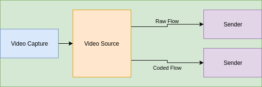
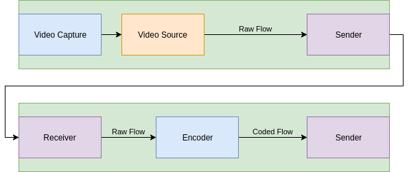

:warning: This file is part of the "archive" – it could contain statements or terms which are incompatible with the main body of the specification and the identity and timing model. :warning:
The Source – defining & understanding it
Purpose of a Source
The Source entity is defined so that it is easy and convenient to refer to time-based signals or "content" in a manner that is agnostic to the "format" used to represent it. If statements about a time-based signal are made using a Source ID then it is clear that those statements apply to all TDSs associated with the Source.
It is important that Source is defined so that it is practically useful, aids in interoperability, and in many common scenarios can be assigned / managed automatically. Therefore, it is helpful for a Source to have a clear and focused definition. This allows a Source ID to be used in establishing a clear "contract" between devices, users, etc for example when designing an API.
Defining Equivalence
The degree to which content can be modified and still be considered to have the same identity has been considered through the definition of Similarity Clusters and the exploration of common production operations. As this exercise has resulted in 'grey areas' it is useful for us to re-examine the user stories relating to content equivalence to aid in our future decisions.
User Stories
- AS A broadcaster I NEED TO automatically combine various combinations of video, audio and data with appropriate synchronization to support a range of different audience needs (platform, language, accessibility, etc.) SO THAT I maximize the value of my content.
- AS A content producer I NEED TO be sure my content can be rendered correctly in different forms (picture size, qualities, aspect ratio, HDR/SDR, conventional/3D/VR, etc.) with correct synchronisation between the video, audio and data elements SO THAT the quality of my output is not compromised on some platforms.
- AS A content producer I NEED TO identify live or stored video, audio and data elements independent of their format SO THAT I know that different representations of the same content are editorially equivalent
- AS A content producer I NEED TO differentiate between representations of the same content SO THAT I can ensure that the appropriate format is selected for the operations I want to perform
- AS A content producer I NEED TO make composition decisions against a locally available rendition and have those decisions enacted on the corresponding remotely available content SO THAT I can save on the cost of sending production staff to remote events.
Analysis
Broadly speaking, these user stories can be distilled into the following:
- Identifying that content is in some way equivalent
- Performing synchronisation for presentation across alternative content
- Performing common processing actions across equivalent content
A key factor to extract from these cases is the differing intent of the 'content processing' (ie. creative) and 'content presentation' (ie. post-processing) phases of a given production chain. The core processing phase requires stronger content equivalence in order for it to have the desired creative output. The presentation phase is far more bound by the technical constraints of the distribution chain or presentation devices, and as such a broader set of alternative representations may be acceptable (or desired).
Taking the example of a Video Crop operation which was identified as a 'grey area', this is commonly used as a presentation function to perform aspect ratio conversions. Whilst this is acceptable at this stage of the production chain, it would be unacceptable if a studio's primary output switched to a cropped output mid-way through a programme because the system identified it as an 'equivalent' TDS.
This is an indicator that there may be a requirement for multiple levels of recognised equivalence. However, for the 'common processing' user stories to be achievable at all, there must be a named Similarity Cluster at that more constrained level, which it is proposed be the Source. This would result in the following operations being considered as having the same Source ID:
- Audio / Video Bit Depth Modification
- Chroma Subsampling Modification
- Byte Packing Modification
- Colorspace Conversion
- Colour Encoding Conversion
- Video Resolution Modification
- Sample Rate Conversion
- Encode / Decode
Defining Source as a named Similarity Cluster
Approach
One way to define a Source is as a "named" SC – this is helpful because it provides a "concrete" definition to work with.
The following use cases have been synthesised from the above user story analysis to help in producing a focused definition of a Source:
- AS A person editing a video programme I NEED TO express my edit decisions SO THAT whichever representations of the programme are generated it will appear as I intended (I accept that these representations may be of different qualities for practical reasons)
- AS A user of a music API I NEED TO discover the different available representations of a recording SO THAT I can choose the most practical representation for the device I am using at the time
- AS A device that creates
TDSs I NEED TO know how to assign eachTDSto aSourceSO THAT users are able to discover theTDSs that they require
### A reminder about Similarity Clusters
A Similarity Cluster (SC) allows us to define an ID for a collection of TDSs that are to some degree similar (they must all be associated with a single Time Varying Information).
This is convenient because it is then easy to refer to the entire collection – we just need to use one ID.
An alternative would be, say, to traverse a web of ancestry relationships between TDSs – possible but not very convenient.
Further, we say that all TDSs that are members of a SC have the same Time Context so it is then possible to easily reference time-points within these TDSs in a consistent way.
Source definition
A Source is defined by the following statements:
- A
Sourceis aSimilarity Cluster - All the
TDSmembers of aSource: - "appear the same" when "rendered" / "decoded" (other than differences in quality / accuracy)
- belong to no other
Source
Notes:
- The "appear the same" constraint means, for example, that differences in "format" (e.g. video codec) between
TDSmembers of aSourceare permitted. However, differences that result in a variation in the time-based data are not permitted unless these are only differences in "quality" (e.g. due to lossy compression). Relating it back to the first use case listed above: none of theTDSs belonging to aSourceintroduce changes that a user of a video editing tool would find "surprising"; none of the changes relate to properties or operations that the user would change for "creative" reasons; changes relate only to the technical properties of the format / representation, and only in ways that merely affect the "quality". - There is no constraint that all
TDSs satisfying these conditions must be part of the sameSource– this constraint would not be practical to enforce. However, clearly aSourceis most useful if all eligibleTDSs are members. - There is no constraint on the
Time Values used in theTDSs belonging to aSource. For example, theseTDSs may not all use the same video sample rate. There appears to be no user story justifying treating this time-based property of the representation differently to any other property of the representation / format. Also, consider that for some audio codecs the "sample rate" is only decided upon decode. - A
Sourcemay have zeroTDSmembers. This may be practically useful because aSourcemay be created before its memberTDSs; when thisSourceis initially created there may be a description of the nature of theTDSs that it will contain. Also, as described in the "commentary", aSourcecan have meaning / utility independently of itsTDSmembers and so having aSourcewith zeroTDSmembers (at least initially) can be meaningful. - For the purposes of these statements, a
TDSis considered to "belong", or be a "member" of, aSimilarity Clustereven if it is only an "indirect" member. For example:SC1---SC2---TDS1-- hereSimilarity Cluster"2" is a member ofSimilarity Cluster"1" and soTDS"1" is also considered to "belong", or be a "member" of,Similarity Cluster"1". - Therefore, no
TDSbelongs to more than oneSource, either "directly" or "indirectly". - Similarly, no
Sourcebelongs to anotherSource, either "directly" or "indirectly" (in other words,Sources cannot be "nested").
Commentary on how Source is defined and interpreted
Other approaches to defining and explaining Source may be helpful in certain scenarios or for readers approaching the field from different perspectives.
It is useful to appreciate that a Source represents what its member TDSs have in common – that is, the time-based data that they all represent. Depending on how the associated TVI is defined, the Source may well represent the TVI in its entirety. The Source entity allows the content to be referred to without needing to refer to a specific TDS.
In some scenarios it may be helpful to think of the Source as identifying the result of running a particular query on the ancestry relationships associated with some TDSs. In this way, the Source can be seen as representing the commonality between a group of TDSs.
Broader definitions of Source were considered (that is, definitions that would permit more TDSs to be members) but these were found to be problematic when analysing user stories:
- If greater changes are permitted to the content represented by
TDSs within aSource(such as converting a colour image to monochrome or allowing a crop of a video) then it becomes more difficult to define the "boundary" of aSource. ASourcebecomes less reliable as a contract for interoperability. - It would be possible to say that any
TDScan be a member of aSourceas long as the manner in which it differs is signalled in the technical metadata of theTDS. However, this technical metadata could potentially be very complex (to support the description of very complex content alterations) and not supported by all devices. Also, when a device is creating aTDSand deciding whichSourceit should belong to it is probably unaware of the technical metadata that will be made available along with thatTDSin all scenarios (e.g. it may be available through a number of different APIs).
Device Agnosticism
Typically the Source may indicate that the TDSs have all originated from the same production device (e.g. multiple coded formats of video from a camera). Consider the following however:
Example: Raw & Coded Video
1. Camera producing raw and coded output

2. Camera producing raw output, and external codec

Analysis
In both of the above operations a raw and coded TDS are created. However, only in example 1 do these two TDSs physically originate on the same device. From a content processing perspective there is no reason to treat the coded TDSs in these two examples any differently, and indeed we already have a way to identify that they were created on different devices via that device's own identity (see AMWA IS-04). It is therefore far more useful to have a more content-centric identifier to indicate the equivalence of these TDSs.
The Case For Additional Named Similarity Clusters
With the Source defined at a specific level, there are a number of operations which remain in a grey area with regard to whether they could be considered equivalent, or even the same TVI. These are:
- Amplify / Attenuate
- Video Crop / Zoom
- Video Squeeze / Squash
- Conversion to monochrome
- EQ Modification
A further higher level Similarity Cluster could be defined to contain these where content forms part of the same TVI as a result of these operations. It is however worth considering the user story which is driving this requirement.
The primary concern regards achieving synchronisation for delivery between related content. Considering a finished programme asset, this may have a Source ID for its video and a Source ID for its audio, with a timing relationship defined between the two. Each Source ID may be associated with a number of equivalent TDSs. The desire is to maintain the synchronisation relationship between the Sources through various operations.
Typically, a delivery chain may include operations such as Encode/Decode and similar intra-Source processes. It may also however include operations such as DOG insertion, watermarking, cropping and mixing, or overlaying a sign language interpreter. These operations fundamentally change the content and as such its TVI, meaning that this relationship is not permitted to be conveyed by a Similarity Cluster.
It appears as a result that a Similarity Cluster may not be the best solution to this problem as it only permits grouping of a narrow subset of the related content. End to end timing may be sufficient to cover this case, however in the case that it is not then an ancestry based mechanism, potentially feeding into a more generic grouping construct may be necessary.